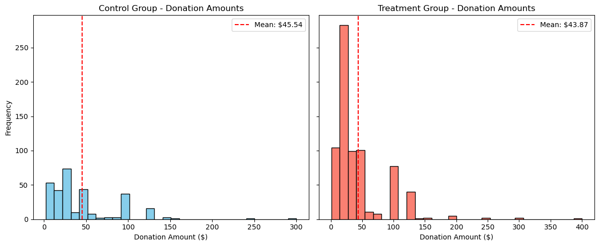

import pandas as pd
import scipy.stats as stats
import statsmodels.api as sm
import statsmodels.formula.api as smfdf = pd.read_stata("/home/jovyan/Desktop/quarto_website1/HW1/karlan_list_2007.dta")
df['ratio1'] = (df['ratio'] == 1).astype(int)list(df.columns)['treatment',
'control',
'ratio',
'ratio2',
'ratio3',
'size',
'size25',
'size50',
'size100',
'sizeno',
'ask',
'askd1',
'askd2',
'askd3',
'ask1',
'ask2',
'ask3',
'amount',
'gave',
'amountchange',
'hpa',
'ltmedmra',
'freq',
'years',
'year5',
'mrm2',
'dormant',
'female',
'couple',
'state50one',
'nonlit',
'cases',
'statecnt',
'stateresponse',
'stateresponset',
'stateresponsec',
'stateresponsetminc',
'perbush',
'close25',
'red0',
'blue0',
'redcty',
'bluecty',
'pwhite',
'pblack',
'page18_39',
'ave_hh_sz',
'median_hhincome',
'powner',
'psch_atlstba',
'pop_propurban',
'ratio1']df| treatment | control | ratio | ratio2 | ratio3 | size | size25 | size50 | size100 | sizeno | ... | bluecty | pwhite | pblack | page18_39 | ave_hh_sz | median_hhincome | powner | psch_atlstba | pop_propurban | ratio1 | |
|---|---|---|---|---|---|---|---|---|---|---|---|---|---|---|---|---|---|---|---|---|---|
| 0 | 0 | 1 | Control | 0 | 0 | Control | 0 | 0 | 0 | 0 | ... | 1.0 | 0.446493 | 0.527769 | 0.317591 | 2.10 | 28517.0 | 0.499807 | 0.324528 | 1.000000 | 0 |
| 1 | 0 | 1 | Control | 0 | 0 | Control | 0 | 0 | 0 | 0 | ... | 0.0 | NaN | NaN | NaN | NaN | NaN | NaN | NaN | NaN | 0 |
| 2 | 1 | 0 | 1 | 0 | 0 | $100,000 | 0 | 0 | 1 | 0 | ... | 1.0 | 0.935706 | 0.011948 | 0.276128 | 2.48 | 51175.0 | 0.721941 | 0.192668 | 1.000000 | 1 |
| 3 | 1 | 0 | 1 | 0 | 0 | Unstated | 0 | 0 | 0 | 1 | ... | 0.0 | 0.888331 | 0.010760 | 0.279412 | 2.65 | 79269.0 | 0.920431 | 0.412142 | 1.000000 | 1 |
| 4 | 1 | 0 | 1 | 0 | 0 | $50,000 | 0 | 1 | 0 | 0 | ... | 1.0 | 0.759014 | 0.127421 | 0.442389 | 1.85 | 40908.0 | 0.416072 | 0.439965 | 1.000000 | 1 |
| ... | ... | ... | ... | ... | ... | ... | ... | ... | ... | ... | ... | ... | ... | ... | ... | ... | ... | ... | ... | ... | ... |
| 50078 | 1 | 0 | 1 | 0 | 0 | $25,000 | 1 | 0 | 0 | 0 | ... | 1.0 | 0.872797 | 0.089959 | 0.257265 | 2.13 | 45047.0 | 0.771316 | 0.263744 | 1.000000 | 1 |
| 50079 | 0 | 1 | Control | 0 | 0 | Control | 0 | 0 | 0 | 0 | ... | 1.0 | 0.688262 | 0.108889 | 0.288792 | 2.67 | 74655.0 | 0.741931 | 0.586466 | 1.000000 | 0 |
| 50080 | 0 | 1 | Control | 0 | 0 | Control | 0 | 0 | 0 | 0 | ... | 0.0 | 0.900000 | 0.021311 | 0.178689 | 2.36 | 26667.0 | 0.778689 | 0.107930 | 0.000000 | 0 |
| 50081 | 1 | 0 | 3 | 0 | 1 | Unstated | 0 | 0 | 0 | 1 | ... | 0.0 | 0.917206 | 0.008257 | 0.225619 | 2.57 | 39530.0 | 0.733988 | 0.184768 | 0.634903 | 0 |
| 50082 | 1 | 0 | 3 | 0 | 1 | $25,000 | 1 | 0 | 0 | 0 | ... | 1.0 | 0.530023 | 0.074112 | 0.340698 | 3.70 | 48744.0 | 0.717843 | 0.127941 | 0.994181 | 0 |
50083 rows × 52 columns
import numpy as np
def welch_t_test(x, y):
# Drop missing values
x = x.dropna()
y = y.dropna()
# Sample sizes
n_x = len(x)
n_y = len(y)
# Sample means
mean_x = np.mean(x)
mean_y = np.mean(y)
# Sample variances
var_x = np.var(x, ddof=1)
var_y = np.var(y, ddof=1)
# Welch's t-statistic
numerator = mean_x - mean_y
denominator = np.sqrt((var_x / n_x) + (var_y / n_y))
if denominator == 0:
return np.nan
t_stat = numerator / denominator
return t_stat
covariates = [
'mrm2', 'hpa', 'years', 'female', 'couple',
'pwhite', 'pblack', 'ave_hh_sz', 'median_hhincome'
]
for var in covariates:
print(f"\n--- Manual Welch t-test for {var} ---")
x = df[df['treatment'] == 1][var]
y = df[df['treatment'] == 0][var]
t_stat = welch_t_test(x, y)
print(f"t = {t_stat:.4f}")
# Linear regression
model = smf.ols(f"{var} ~ treatment", data=df).fit()
coef = model.params['treatment']
p = model.pvalues['treatment']
print(f"Regression: coef = {coef:.3f}, p = {p:.4f}")
--- Manual Welch t-test for mrm2 ---
t = 0.1195
Regression: coef = 0.014, p = 0.9049
--- Manual Welch t-test for hpa ---
t = 0.9704
Regression: coef = 0.637, p = 0.3451
--- Manual Welch t-test for years ---
t = -1.0909
Regression: coef = -0.058, p = 0.2700
--- Manual Welch t-test for female ---
t = -1.7535
Regression: coef = -0.008, p = 0.0787
--- Manual Welch t-test for couple ---
t = -0.5823
Regression: coef = -0.002, p = 0.5594
--- Manual Welch t-test for pwhite ---
t = -0.5590
Regression: coef = -0.001, p = 0.5753
--- Manual Welch t-test for pblack ---
t = 0.0975
Regression: coef = 0.000, p = 0.9219
--- Manual Welch t-test for ave_hh_sz ---
t = 0.8234
Regression: coef = 0.003, p = 0.4098
--- Manual Welch t-test for median_hhincome ---
t = -0.7433
Regression: coef = -157.925, p = 0.4583import matplotlib.pyplot as plt
group_totals = df.groupby('treatment')['amount'].sum()
group_totals.index = ['Control', 'Treatment']
plt.figure(figsize=(6, 5))
group_totals.plot(kind='bar', color=['skyblue', 'salmon'])
plt.title('Total Donations Raised by Group')
plt.ylabel('Total Dollars Raised')
plt.xlabel('Group')
plt.xticks(rotation=0)
plt.grid(axis='y', linestyle='--', alpha=0.7)
plt.tight_layout()
plt.show()from scipy.stats import ttest_ind
control_gave = df[df['treatment'] == 0]['gave'].dropna()
treatment_gave = df[df['treatment'] == 1]['gave'].dropna()
t_stat, p_val = ttest_ind(treatment_gave, control_gave, equal_var=False)
print(f"T-test: t = {t_stat:.3f}, p = {p_val:.4f}")T-test: t = 3.209, p = 0.0013import statsmodels.formula.api as smf
model = smf.ols('gave ~ treatment', data=df).fit()
print(model.summary()) OLS Regression Results
==============================================================================
Dep. Variable: gave R-squared: 0.000
Model: OLS Adj. R-squared: 0.000
Method: Least Squares F-statistic: 9.618
Date: Wed, 23 Apr 2025 Prob (F-statistic): 0.00193
Time: 17:04:45 Log-Likelihood: 26630.
No. Observations: 50083 AIC: -5.326e+04
Df Residuals: 50081 BIC: -5.324e+04
Df Model: 1
Covariance Type: nonrobust
==============================================================================
coef std err t P>|t| [0.025 0.975]
------------------------------------------------------------------------------
Intercept 0.0179 0.001 16.225 0.000 0.016 0.020
treatment 0.0042 0.001 3.101 0.002 0.002 0.007
==============================================================================
Omnibus: 59814.280 Durbin-Watson: 2.005
Prob(Omnibus): 0.000 Jarque-Bera (JB): 4317152.727
Skew: 6.740 Prob(JB): 0.00
Kurtosis: 46.440 Cond. No. 3.23
==============================================================================
Notes:
[1] Standard Errors assume that the covariance matrix of the errors is correctly specified.import statsmodels.api as sm
df['intercept'] = 1 # probit model requires intercept manually
probit_model = sm.Probit(df['gave'], df[['intercept', 'treatment']]).fit()
print(probit_model.summary())Optimization terminated successfully.
Current function value: 0.100443
Iterations 7
Probit Regression Results
==============================================================================
Dep. Variable: gave No. Observations: 50083
Model: Probit Df Residuals: 50081
Method: MLE Df Model: 1
Date: Wed, 23 Apr 2025 Pseudo R-squ.: 0.0009783
Time: 17:04:45 Log-Likelihood: -5030.5
converged: True LL-Null: -5035.4
Covariance Type: nonrobust LLR p-value: 0.001696
==============================================================================
coef std err z P>|z| [0.025 0.975]
------------------------------------------------------------------------------
intercept -2.1001 0.023 -90.073 0.000 -2.146 -2.054
treatment 0.0868 0.028 3.113 0.002 0.032 0.141
==============================================================================from scipy.stats import ttest_ind
# Filter groups
r1 = df[df['ratio'] == 1]['gave']
r2 = df[df['ratio2'] == 1]['gave']
r3 = df[df['ratio3'] == 1]['gave']
# T-tests
print("T-test: 2:1 vs 1:1")
print(ttest_ind(r2, r1, equal_var=False))
print("\nT-test: 3:1 vs 1:1")
print(ttest_ind(r3, r1, equal_var=False))
print("\nT-test: 3:1 vs 2:1")
print(ttest_ind(r3, r2, equal_var=False))T-test: 2:1 vs 1:1
TtestResult(statistic=0.965048975142932, pvalue=0.33453078237183076, df=22225.07770983836)
T-test: 3:1 vs 1:1
TtestResult(statistic=1.0150174470156275, pvalue=0.31010856527625774, df=22215.0529778684)
T-test: 3:1 vs 2:1
TtestResult(statistic=0.05011581369764474, pvalue=0.9600305476940865, df=22260.84918918778)import statsmodels.formula.api as smf
model = smf.ols('gave ~ ratio1 + ratio2 + ratio3', data=df).fit()
print(model.summary()) OLS Regression Results
==============================================================================
Dep. Variable: gave R-squared: 0.000
Model: OLS Adj. R-squared: 0.000
Method: Least Squares F-statistic: 3.665
Date: Wed, 23 Apr 2025 Prob (F-statistic): 0.0118
Time: 17:04:45 Log-Likelihood: 26630.
No. Observations: 50083 AIC: -5.325e+04
Df Residuals: 50079 BIC: -5.322e+04
Df Model: 3
Covariance Type: nonrobust
==============================================================================
coef std err t P>|t| [0.025 0.975]
------------------------------------------------------------------------------
Intercept 0.0179 0.001 16.225 0.000 0.016 0.020
ratio1 0.0029 0.002 1.661 0.097 -0.001 0.006
ratio2 0.0048 0.002 2.744 0.006 0.001 0.008
ratio3 0.0049 0.002 2.802 0.005 0.001 0.008
==============================================================================
Omnibus: 59812.754 Durbin-Watson: 2.005
Prob(Omnibus): 0.000 Jarque-Bera (JB): 4316693.217
Skew: 6.740 Prob(JB): 0.00
Kurtosis: 46.438 Cond. No. 4.26
==============================================================================
Notes:
[1] Standard Errors assume that the covariance matrix of the errors is correctly specified.coef_r2 = model.params.get('ratio2', 0)
coef_r3 = model.params.get('ratio3', 0)
print(f"\nDifference 2:1 vs 1:1: {coef_r2:.4f}")
print(f"Difference 3:1 vs 1:1: {coef_r3:.4f}")
print(f"Difference 3:1 vs 2:1: {coef_r3 - coef_r2:.4f}")
Difference 2:1 vs 1:1: 0.0048
Difference 3:1 vs 1:1: 0.0049
Difference 3:1 vs 2:1: 0.0001from scipy.stats import ttest_ind
import statsmodels.formula.api as smf
control_amt = df[df['treatment'] == 0]['amount']
treatment_amt = df[df['treatment'] == 1]['amount']
t_stat, p_val = ttest_ind(treatment_amt, control_amt, equal_var=False)
print(f"T-test (all data): t = {t_stat:.3f}, p = {p_val:.4f}")
# Bivariate regression
model = smf.ols('amount ~ treatment', data=df).fit()
print(model.summary())T-test (all data): t = 1.918, p = 0.0551
OLS Regression Results
==============================================================================
Dep. Variable: amount R-squared: 0.000
Model: OLS Adj. R-squared: 0.000
Method: Least Squares F-statistic: 3.461
Date: Wed, 23 Apr 2025 Prob (F-statistic): 0.0628
Time: 17:04:45 Log-Likelihood: -1.7946e+05
No. Observations: 50083 AIC: 3.589e+05
Df Residuals: 50081 BIC: 3.589e+05
Df Model: 1
Covariance Type: nonrobust
==============================================================================
coef std err t P>|t| [0.025 0.975]
------------------------------------------------------------------------------
Intercept 0.8133 0.067 12.063 0.000 0.681 0.945
treatment 0.1536 0.083 1.861 0.063 -0.008 0.315
==============================================================================
Omnibus: 96861.113 Durbin-Watson: 2.008
Prob(Omnibus): 0.000 Jarque-Bera (JB): 240735713.635
Skew: 15.297 Prob(JB): 0.00
Kurtosis: 341.269 Cond. No. 3.23
==============================================================================
Notes:
[1] Standard Errors assume that the covariance matrix of the errors is correctly specified.
df_donors = df[df['amount'] > 0]
c_amt = df_donors[df_donors['treatment'] == 0]['amount']
t_amt = df_donors[df_donors['treatment'] == 1]['amount']
t_stat, p_val = ttest_ind(t_amt, c_amt, equal_var=False)
print(f"T-test (donors only): t = {t_stat:.3f}, p = {p_val:.4f}")
model_donors = smf.ols('amount ~ treatment', data=df_donors).fit()
print(model_donors.summary())T-test (donors only): t = -0.585, p = 0.5590
OLS Regression Results
==============================================================================
Dep. Variable: amount R-squared: 0.000
Model: OLS Adj. R-squared: -0.001
Method: Least Squares F-statistic: 0.3374
Date: Wed, 23 Apr 2025 Prob (F-statistic): 0.561
Time: 17:04:45 Log-Likelihood: -5326.8
No. Observations: 1034 AIC: 1.066e+04
Df Residuals: 1032 BIC: 1.067e+04
Df Model: 1
Covariance Type: nonrobust
==============================================================================
coef std err t P>|t| [0.025 0.975]
------------------------------------------------------------------------------
Intercept 45.5403 2.423 18.792 0.000 40.785 50.296
treatment -1.6684 2.872 -0.581 0.561 -7.305 3.968
==============================================================================
Omnibus: 587.258 Durbin-Watson: 2.031
Prob(Omnibus): 0.000 Jarque-Bera (JB): 5623.279
Skew: 2.464 Prob(JB): 0.00
Kurtosis: 13.307 Cond. No. 3.49
==============================================================================
Notes:
[1] Standard Errors assume that the covariance matrix of the errors is correctly specified.import matplotlib.pyplot as plt
control = df_donors[df_donors['treatment'] == 0]['amount']
treatment = df_donors[df_donors['treatment'] == 1]['amount']
fig, axes = plt.subplots(1, 2, figsize=(12, 5), sharey=True)
axes[0].hist(control, bins=30, color='skyblue', edgecolor='black')
axes[0].axvline(control.mean(), color='red', linestyle='dashed', label=f'Mean: ${control.mean():.2f}')
axes[0].set_title('Control Group - Donation Amounts')
axes[0].set_xlabel('Donation Amount ($)')
axes[0].set_ylabel('Frequency')
axes[0].legend()
axes[1].hist(treatment, bins=30, color='salmon', edgecolor='black')
axes[1].axvline(treatment.mean(), color='red', linestyle='dashed', label=f'Mean: ${treatment.mean():.2f}')
axes[1].set_title('Treatment Group - Donation Amounts')
axes[1].set_xlabel('Donation Amount ($)')
axes[1].legend()
plt.tight_layout()
plt.show()
import numpy as np
import matplotlib.pyplot as plt
n = 10000
p_control = 0.018
p_treatment = 0.022
true_diff = p_treatment - p_control
control_draws = np.random.binomial(n=1, p=p_control, size=n)
treatment_draws = np.random.binomial(n=1, p=p_treatment, size=n)
differences = treatment_draws - control_draws
cumulative_avg_diff = np.cumsum(differences) / np.arange(1, n + 1)
plt.figure(figsize=(10, 6))
plt.plot(cumulative_avg_diff, label='Cumulative Avg. Difference')
plt.axhline(true_diff, color='red', linestyle='dashed', label='True Difference = 0.004')
plt.title("Law of Large Numbers: Cumulative Avg. Difference in Donation Rates")
plt.xlabel("Number of Simulated Pairs")
plt.ylabel("Cumulative Average Difference")
plt.legend()
plt.grid(True)
plt.tight_layout()
plt.show()This simulation shows how the average difference in donation rates between treatment and control groups stabilizes as the sample size increases. Although early values fluctuate due to randomness, the cumulative average converges to the true difference (0.004) as more data is added. This demonstrates the Law of Large Numbers: with enough observations, sample averages reliably approach their expected values.
import numpy as np
import matplotlib.pyplot as plt
# Parameters
control_p = 0.018
treat_p = 0.022
sample_sizes = [50, 200, 500, 1000]
n_simulations = 1000
# Set up plots
fig, axes = plt.subplots(2, 2, figsize=(12, 8))
axes = axes.flatten()
for i, n in enumerate(sample_sizes):
diffs = []
for _ in range(n_simulations):
control = np.random.binomial(1, control_p, n)
treat = np.random.binomial(1, treat_p, n)
diffs.append(np.mean(treat) - np.mean(control))
# Plot histogram
axes[i].hist(diffs, bins=30, color='skyblue', edgecolor='black')
axes[i].axvline(0, color='red', linestyle='dashed', label='Zero')
axes[i].set_title(f'Sample Size = {n}')
axes[i].set_xlabel('Avg. Difference in Means')
axes[i].set_ylabel('Frequency')
axes[i].legend()
plt.tight_layout()
plt.show()
As sample size increases, the distribution of average differences becomes more concentrated and symmetric, illustrating the Central Limit Theorem. With small samples (e.g., 50), the spread is wide and variable. But by n = 1000, the distribution is nearly normal and centered around the true mean difference. Importantly, zero is in the tail, not the center, suggesting that the effect of the treatment is consistently positive across simulations.